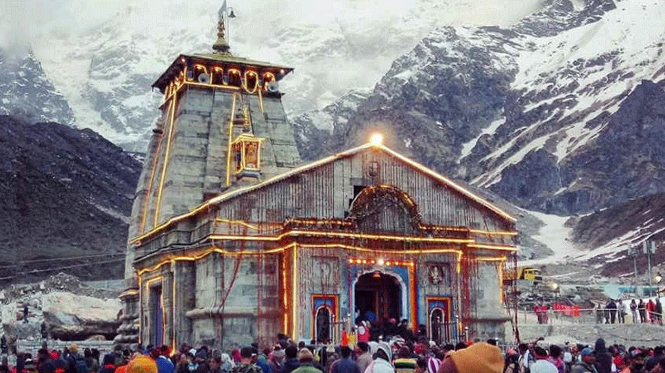
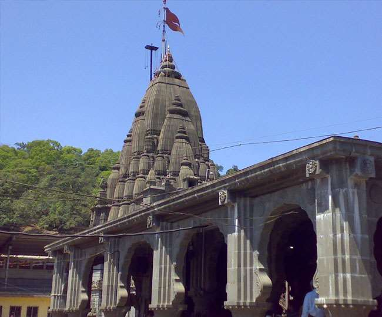

हिन्दू धर्म में पुराणों के अनुसार शिवजी जहाँ-जहाँ स्वयं प्रगट हुए उन बारह स्थानों पर स्थित शिवलिंगों को ज्योतिर्लिंगों के रूप में पूजा जाता है।ये संख्या में १२ है । सौराष्ट्र प्रदेश (काठियावाड़) में श्रीसोमनाथ, श्रीशैल पर श्रीमल्लिकार्जुन, उज्जयिनी (उज्जैन) में श्रीमहाकाल, ॐकारेश्वर अथवा ममलेश्वर, परली में वैद्यनाथ, डाकिनी नामक स्थान में श्रीभीमशंकर, सेतुबंध पर श्री रामेश्वर, दारुकावन में श्रीनागेश्वर, वाराणसी (काशी) में श्री विश्वनाथ, गौतमी (गोदावरी) के तट पर श्री त्र्यम्बकेश्वर, हिमालय पर केदारखंड में श्रीकेदारनाथ और शिवालय में श्रीघृष्णेश्वर । हिंदुओं में मान्यता है कि जो मनुष्य प्रतिदिन प्रात:काल और संध्या के समय इन बारह ज्योतिर्लिंगों का नाम लेता है, उसके सात जन्मों का किया हुआ पाप इन लिंगों के स्मरण मात्र से मिट जाता है । प्रत्येक ज्योतिर्लिङ्ग का एक एक उपलिंग भी है जिनका वर्णन शिव महापुराण की कोटिरुद्र संहिता के प्रथम अध्याय से प्राप्त होता है ।
सोमनाथ मंदिर,गुजरात
श्री सोमनाथ सौराष्ट्र, (गुजरात) के प्रभास क्षेत्र में विराजमान है। इस प्रसिद्ध मंदिर को अतीत में छह बार ध्वस्त एवम् निर्मित किया गया है। 1022 ई में इसकी समृद्धि को महमूद गजनवी के हमले से सार्वाधिक नुकसान पहुँचा था।
मल्लिकार्जुन,आंध्र प्रदेश
आन्ध्र प्रदेश प्रान्त के कृष्णा जिले में कृष्णा नदी के तटपर श्रीशैल पर्वत पर श्रीमल्लिकार्जुन विराजमान हैं। इसे दक्षिण का कैलाश कहते हैं।
महाकालेश्वर,मध्यप्रदेश
श्री महाकालेश्वर (मध्यप्रदेश) के मालवा क्षेत्र में क्षिप्रा नदी के तटपर पवित्र उज्जैन नगर में विराजमान है। उज्जैन को प्राचीनकाल में अवन्तिकापुरी कहते थे।
ॐकारेश्वर,मध्यप्रदेश
मालवा क्षेत्र में श्रीॐकारेश्वर स्थान नर्मदा नदी के बीच स्थित द्वीप पर है। उज्जैन से खण्डवा जाने वाली रेलवे लाइन पर मोरटक्का नामक स्टेशन है, वहाँ से यह स्थान 10 मील दूर है। यहाँ ॐकारेश्वर और मामलेश्वर दो पृथक-पृथक लिंग हैं, परन्तु ये एक ही लिंग के दो स्वरूप हैं। श्रीॐकारेश्वर लिंग को स्वयम्भू समझा जाता है।
केदारनाथ,उत्तराखंड
श्री केदारनाथ हिमालय के केदार नामक श्रृंगपर स्थित हैं। शिखर के पूर्व की ओर अलकनन्दा के तट पर श्री बदरीनाथ अवस्थित हैं और पश्चिम में मन्दाकिनी के किनारे श्री केदारनाथ हैं। यह स्थान हरिद्वार से 150 मील और ऋषिकेश से 132 मील दूर उत्तरांचल राज्य में है।

भीमाशंकर,महाराष्ट्र
श्री भीमशंकर का स्थान मुंबई से पूर्व और पूना से उत्तर भीमा नदी के किनारे सह्याद्रि पर्वत पर है। यह स्थान नासिक से लगभग 120 मील दूर है। सह्याद्रि पर्वत के एक शिखर का नाम डाकिनी है। शिवपुराण की एक कथा के आधार पर भीमशंकर ज्योतिर्लिंग को असम के कामरूप जिले में गुवाहाटी के पास ब्रह्मपुर पहाड़ी पर स्थित बतलाया जाता है। कुछ लोग मानते हैं कि नैनीताल जिले के काशीपुर नामक स्थान में स्थित विशाल शिवमंदिर भीमशंकर का स्थान है।

काशी विश्वनाथ,उत्तर प्रदेश
वाराणसी (उत्तर प्रदेश) स्थित काशी के श्रीविश्वनाथजी सबसे प्रमुख ज्योतिर्लिंगों में एक हैं। गंगा तट स्थित काशी विश्वनाथ शिवलिंग दर्शन हिन्दुओं के लिए सबसे पवित्र है।
त्रयम्बकेश्वर,महाराष्ट्र
श्री त्र्यम्बकेश्वर ज्योतिर्लिंग महाराष्ट्र प्रान्त के नासिक जिले में पंचवटी से 18 मील की दूरी पर ब्रह्मगिरि के निकट गोदावरी के किनारे है। इस स्थान पर पवित्र गोदावरी नदी का उद्गम भी है।
वैद्यनाथ,महाराष्ट्र
श्री त्र्यम्बकेश्वर ज्योतिर्लिंग महाराष्ट्र प्रान्त के नासिक जिले में पंचवटी से 18 मील की दूरी पर ब्रह्मगिरि के निकट गोदावरी के किनारे है। इस स्थान पर पवित्र गोदावरी नदी का उद्गम भी है।
नागेश्वर,गुजरात
श्रीनागेश्वर ज्योतिर्लिंग बड़ौदा क्षेत्रांतर्गत गोमती द्वारका से ईशानकोण में बारह-तेरह मील की दूरी पर है। निजाम हैदराबाद राज्य के अन्तर्गत औढ़ा ग्राम में स्थित शिवलिंग को ही कोई-कोई नागेश्वर ज्योतिर्लिंग मानते हैं। कुछ लोगों के मत से अल्मोड़ा से 17 मील उत्तर-पूर्व में यागेश (जागेश्वर) शिवलिंग ही नागेश ज्योतिर्लिंग है।
रामेश्वर,तमिल नाडु
श्रीरामेश्वर तीर्थ तमिलनाडु प्रान्त के रामनाड जिले में है। यहाँ लंका विजय के पश्चात भगवान श्रीराम ने अपने अराध्यदेव शंकर की पूजा की थी। ज्योतिर्लिंग को श्रीरामेश्वर या श्रीरामलिंगेश्वर के नाम से जाना जाता है।
घृष्णेश्वर,महाराष्ट्र
श्रीघुश्मेश्वर (गिरीश्नेश्वर) ज्योतिर्लिंग को घुसृणेश्वर या घृष्णेश्वर भी कहते हैं। इनका स्थान महाराष्ट्र प्रान्त में दौलताबाद स्टेशन से बारह मील दूर बेरूल गाँव के पास है।